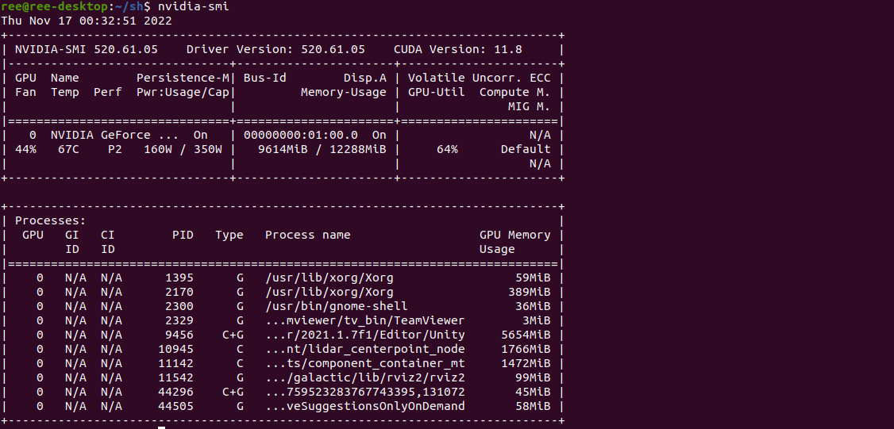
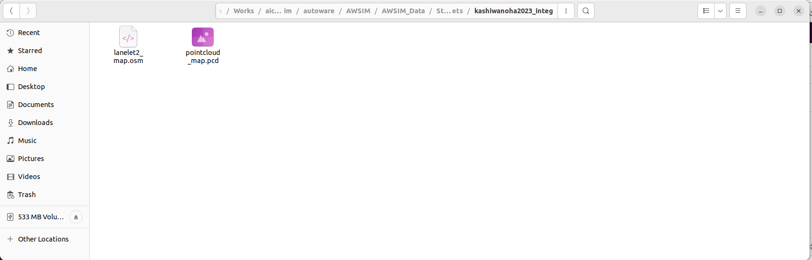
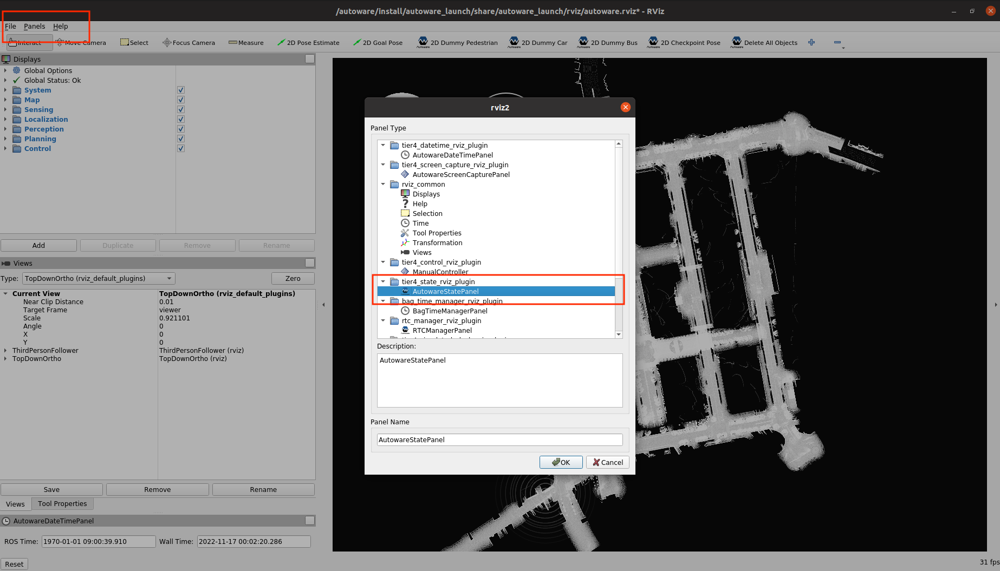
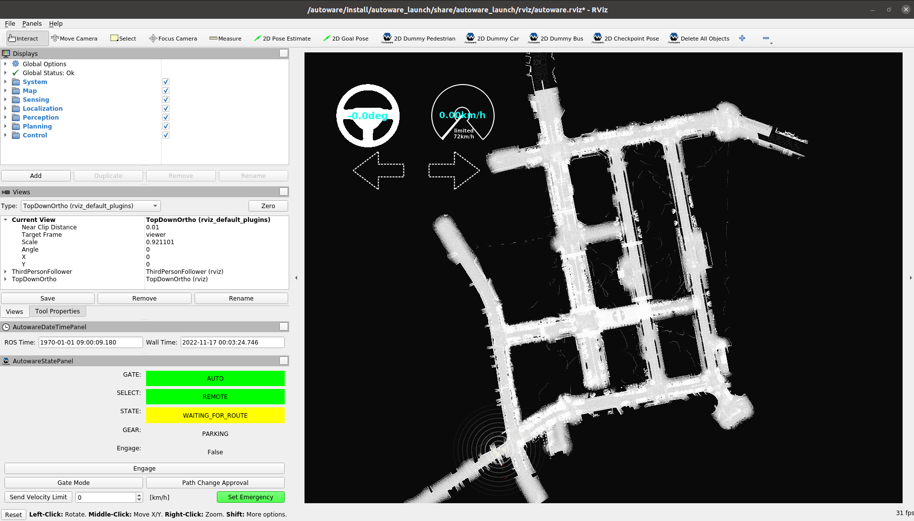

SetUp
Minimum Hardware Requirements
We recommend the following PC operating environment for this tournament.
- OS: Ubuntu 22.04
- CPU: Intel Corei7 (8 cores) or higher
- GPU: NVIDIA Geforce RTX 3080 (VRAM 12 GB) or higher
- Memory: 32 GB or more
- Storage: SSD 30 GB or higher
If you are unable to prepare a PC that meets the above specifications, please refer to the "For participants with two PCs" below.
For participants with two PCs
Autoware PC
- OS: Ubuntu 22.04
- CPU: Intel Corei7 (8 cores) or higher
- GPU: NVIDIA Geforce GTX 1080 or higher
- Memory: 16 GB or higher
- Storage: SSD 10 GB or higher
- For more information here
AWSIM PC
- OS: Ubuntu 22.04 or Windows 10/11
- CPU: Intel Corei7 (6 cores and 12 threads) or higher
- GPU: NVIDIA Geforce RTX 2080 Ti or higher
- For more information click here
Autoware and AWSIM PCs should be located in the same network. If they are located in the same network, topic communication between PCs is basically possible without any additional settings. In the unlikely event that topic communication is not possible, please disable the firewall or review the rules.
Environment Setup
AWSIM(Ubuntu)
Preparation
Install Nvidia drivers
- add repository
sudo add-apt-repository ppa:graphics-drivers/ppa- update package list
sudo apt update- install
sudo ubuntu-drivers autoinstall- After rebooting, run the following command to confirm that the installation has completed.
nvidia-smi
Install Vulkun
- update package list
sudo apt update- install libvulkan1
sudo apt install libvulkan1Prepare the course
- Download the executable file for the competition and unzip it
※Tutorial Environment - change permissions as shown in the figure

Double-click the file to launch it. - confirm that the following screen is displayed

- Download the executable file for the competition and unzip it
Starting AWSIM in a Docker container
If you want to start AWSIM from a Docker container, please follow the steps below after installing a Docker image according to the Docker image preparation procedure (see below).
- extract the executable file for the convention in
aichallenge2023-sim/autoware(Hereinafter, it is assumed to be located inaichallenge2023-sim/autoware/AWSIM/AWSIM.x86_64) - launch the Docker container
cd aichallenge2023-sim
rocker --nvidia --x11 --user --net host --privileged --volume autoware:/aichallenge -- ghcr.io/automotiveaichallenge/aichallenge2023-sim/ autoware-universe-cuda:v1
- execute the following in the container
export ROS_LOCALHOST_ONLY=1
export RMW_IMPLEMENTATION=rmw_cyclonedds_cpp
export RCUTILS_COLORIZED_OUTPUT=1
source /autoware/install/setup.bash
/aichallenge/AWSIM/AWSIM.x86_64
AWSIM(Windows)
- Download the executable file for the convention and unzip it.
※Tutorial Environment - double-click the file to start it
Confirm that the following screen is displayed.
Copy map data (pcd, osm)

Map data is stored in AWSIM compressed files. Copy the osm and pcd files located in AWSIM_Data/StreamingAssets/kashiwanoha2023_integ to aichallenge2023-sim/autoware/mapfile and arrange them so that the file structure is as follows:
aichallenge2023-sim
└ autoware
└ mapfile
├ .gitkeep
├ lanelet2_map.osm
└ pointcloud_map.pcd
Autoware
Docker image of Autoware (using CUDA) is available for this competition.
Preparation
Please install the following.Prepare and launch Docker image - Prepare Autoware
- get a Docker image
docker pull ghcr.io/automotiveaichallenge/aichallenge2023-sim/autoware-universe-cuda:v1If the above method takes a long time or times out, you can use the following method.
We have placed a tarball of the image at here. Please use the following commanddocker load < autoware-universe-cuda_v1.tar.gz- download the data for the competition
sudo apt install -y git-lfs git lfs clone https://github.com/AutomotiveAIChallenge/aichallenge2023-sim- start rocker
cd . /aichallenge2023-sim rocker --nvidia --x11 --user --net host --privileged --volume autoware:/aichallenge -- ghcr.io/automotiveaichallenge/aichallenge2023-sim/ autoware-universe-cuda:v1Verify Autoware operation
This section describes how to check the operation of Autoware using AWSIM.- Start AWSIM.
- Start Autoware.
# In the Rocker container export ROS_LOCALHOST_ONLY=1 export RMW_IMPLEMENTATION=rmw_cyclonedds_cpp export RCUTILS_COLORIZED_OUTPUT=1 cd /aichallenge/aichallenge_ws colcon build --symlink-install --cmake-args -DCMAKE_BUILD_TYPE=Release source install/setup.bash cd /aichallenge ros2 launch autoware_launch e2e_simulator.launch.xml vehicle_model:=golfcart sensor_model:=awsim_sensor_kit map_path:=/aichallenge/mapfileConfirm that the following screen (Rviz2) is displayed.

Confirm that self-position estimation is done. If it is not estimated correctly, select
2D Pose Estimatein the tab and drag the actual position of the vehicle. Select the
2D Goal Posein theGoal Posetab and drag to specify the goal position. Confirm that the route is displayed andRoutingchanges fromUNSETtoSETas shown in the image (it takes a little time after you specify it). Press the
AUTObutton inOperationModeand confirm that self driving is started.